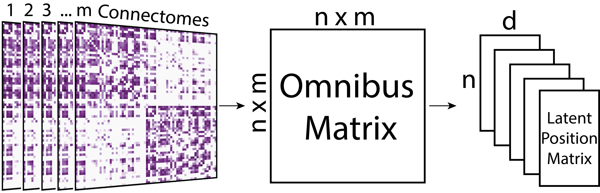

name:opening ## Statistical Methods for Population of Connectomes Jaewon Chung | Johns Hopkins University <img src="images/neurodata_purple.png" style="height:250px; float:right;"/> <br><br><br><br><br><br><br><br><br><br><br> <!-- <img src="images/funding/jhu_bme_blue.png" STYLE="HEIGHT:95px;"/> --> .foot[[j1c@jhu.edu](mailto:j1c@jhu.edu) | <http://neurodata.io/talks/> | [@neuro_data](https://twitter.com/neuro_data)] --- ### Brains as connectomes 1. Vertices = region of interest 2. Edges = connectivity measure (e.g. # of fibers, correlation) connectomes = graphs = adjacency matrix --- ### Statistical inference on graphs If edges in a graph are random, 1. model the randomness via a distribution 2. estimate the parameters of such distribution from data 3. use estimates in subsequent inference tasks --- #### A classical example Collect height data from {males, females} from a population -- 1. model via Gaussian (normal) distribution - $\mathcal{N}(\mu, \sigma^2)$ 2. estimate mean $(\mu)$ and variance $(\sigma^2)$ for males and females 3. inference tasks? - hypothesis testing: mean of male and female different? - classification: naive bayes --- ### Two models for population of graphs - .r[Random Dot Product Graph (RDPG)] - .purple[Common Subspace Independent Edge Graph (COSIE)] --- ### Random Dot Product Graphs (RDPG) - All nodes have a *latent position* in d-dimensional space - Probability of an edge between a pair of nodes is equal to the dot product of their latent positions .footnote[[Athreya et al. (JMLR) 2018](http://jmlr.org/papers/v18/17-448.html)] --- ### Estimating parameters of RDPG: Omnibus Embedding (omni for short)  .footnote[[Athreya et al. (JMLR) 2018](http://jmlr.org/papers/v18/17-448.html)] --- ### Common Subspace Independent Edge Graph (COSIE) - blah - blah --- ### Estimating parameters of COSIE: Multiple Adjacency Spectral Embedding (mase for short) <img src="images/mase_method.png" STYLE="width:100%" /> - m = number of connectomes - n = number of vertices - d, d' = embedding dimensions --- ### Graph Statistics in Python (GraSPy) - python package - scikit-learn API .footnote[https://neurodata.io/graspy/] --- ### HNU1 Dataset - dMRI processed via [ndmg](https://neurodata.io/ndmg/) - 30 subjects - scanned once every 5 days, 10 scans total .footnote[[Data description](http://fcon_1000.projects.nitrc.org/indi/CoRR/html/hnu_1.html)] -- Subsample 3 subjects (30 connectomes total) -- Tasks 1. Cluster 2. Classify 3. Cluster vertices (community detection) --- class: middle, inverse # .center[Live Demo!] --- ### References 1. Vogelstein JT, et al. [*Connectal Coding: Discovering the Structures Linking Cognitive Phenotypes to Individual Histories.*](https://github.com/neurodata/neurodata.io/raw/deploy/source/docs/Connectal_Coding.pdf) Current Opinion in Neurobiology, April 2019. 2. Chung, J et al. [*GraSPy: Graph Statistics in Python.*](https://arxiv.org/abs/1904.05329) arXiv, 2019. --- ### Acknowledgements <div class="small-container"> <img src="faces/jovo.png" /> <div class="centered">Joshua Vogelstein</div> </div> <div class="small-container"> <img src="faces/cep.png"/> <div class="centered">Carey Priebe</div> </div> <div class="small-container"> <div class="centered">Ben Pedigo</div> </div> <div class="small-container"> <div class="centered">Hayden Helm</div> </div> <div class="small-container"> <div class="centered">Eric Bridgeford</div> </div> <div class="small-container"> <div class="centered">Vikram Chandrashekhar</div> </div> <div class="small-container"> <div class="centered">Drishti Mannan</div> </div> <div class="small-container"> <div class="centered">Jesse Patsolic</div> </div> <div class="small-container"> <div class="centered">Benjamin Falk</div> </div> <div class="small-container"> <div class="centered">Alex Loftus</div> </div> <div class="small-container"> <div class="centered">Minh Tang</div> </div> <div class="small-container"> <div class="centered">Avanti Athreya</div> </div> <div class="small-container"> <img src="faces/gkiar.jpg"/> <div class="centered">Greg Kiar</div> </div> --- ## NeuroData Workshop - August 19-23, 2019 - Baltimore, MD USA --- ## Contact - email: j1c@jhu.edu - mattermost: @j1c - poster: W768 - Clustering Multimodal Connectomes --- class: middle, inverse # .center[Questions?] --- ### Why embed graphs? (backup slide) Under RDPG or COSIE model, omni or mase, respectivly, will provide: 1. consistent estimates of parameters 2. normal limiting distribution of parameters (central limit theorem) .footnote[[Levin et al. (IEEE) 2017](https://ieeexplore.ieee.org/document/8215766)]